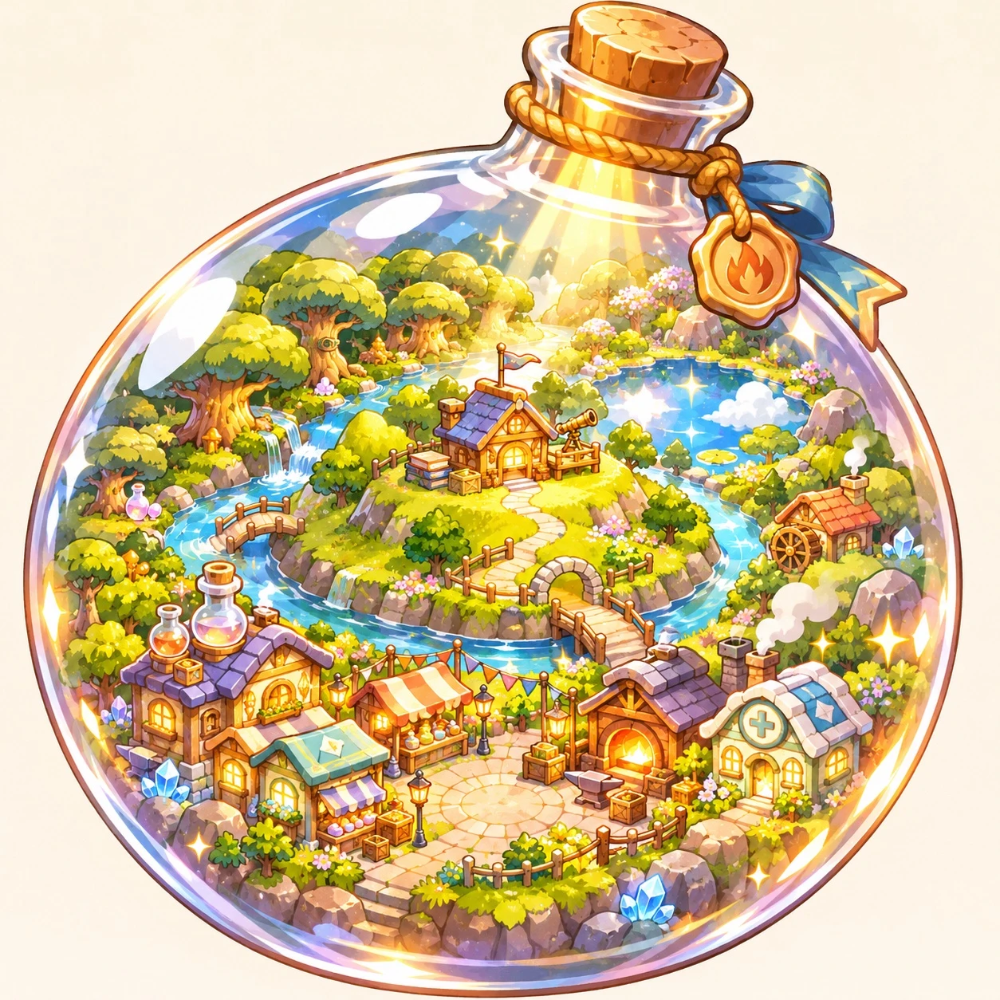
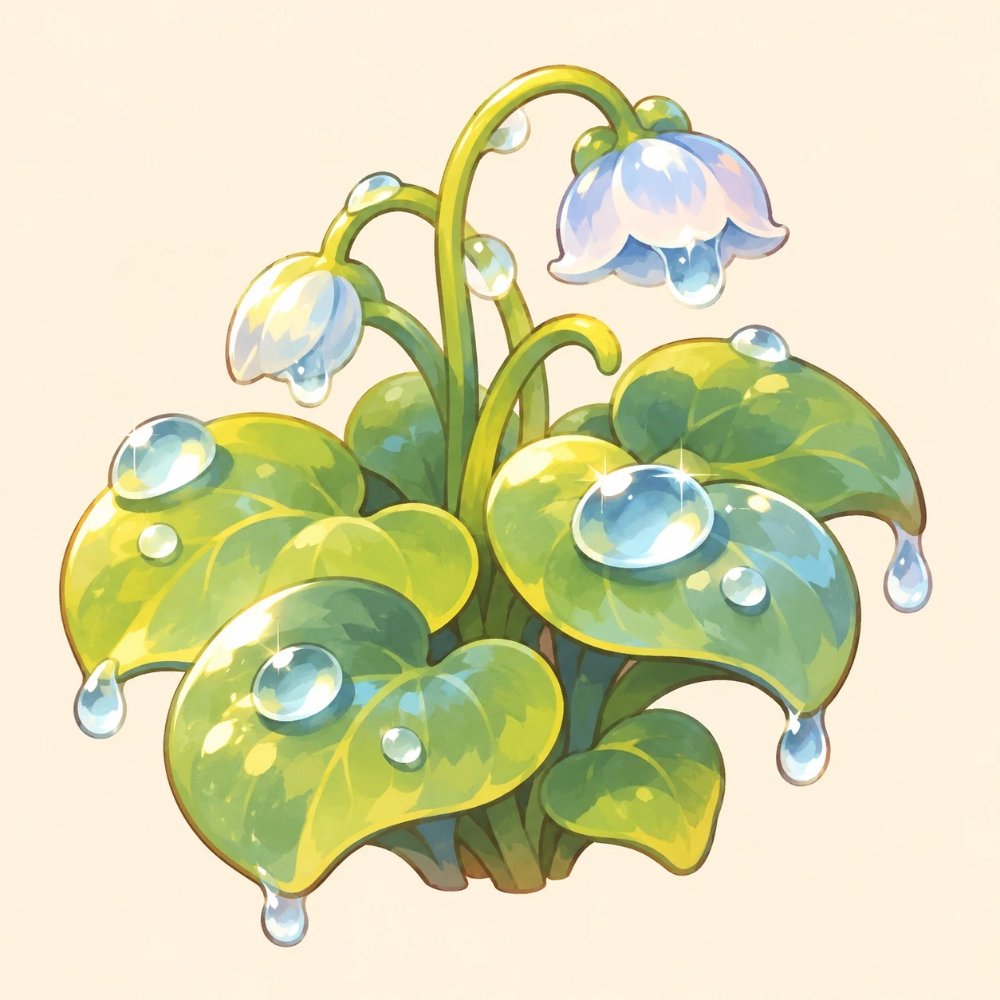
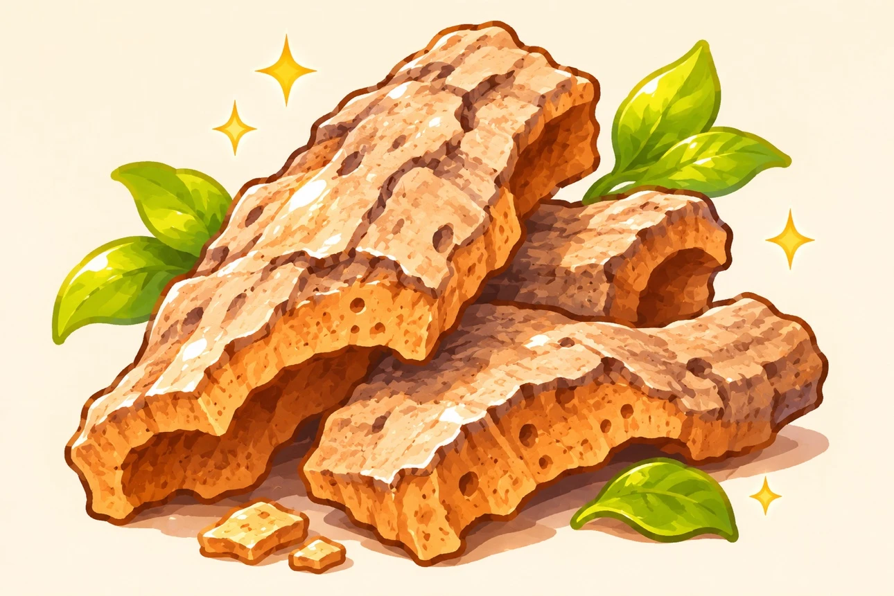
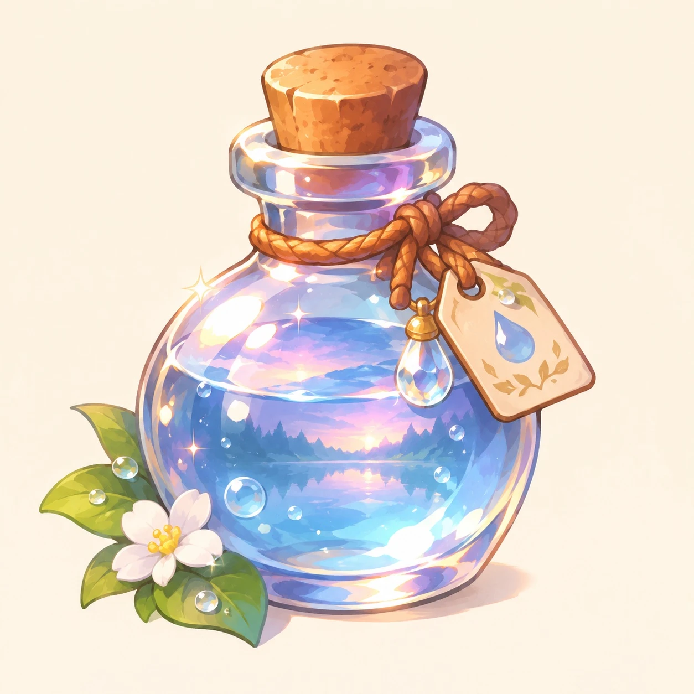
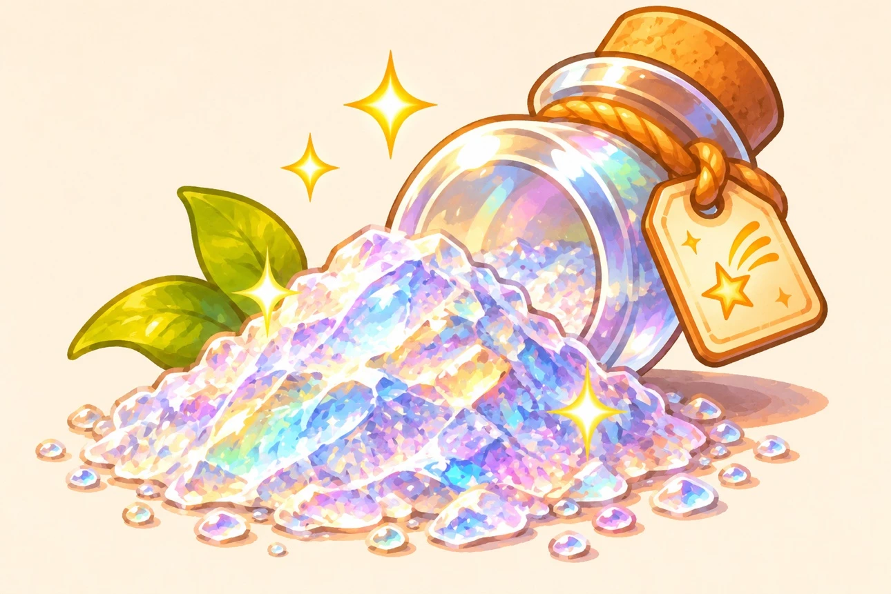
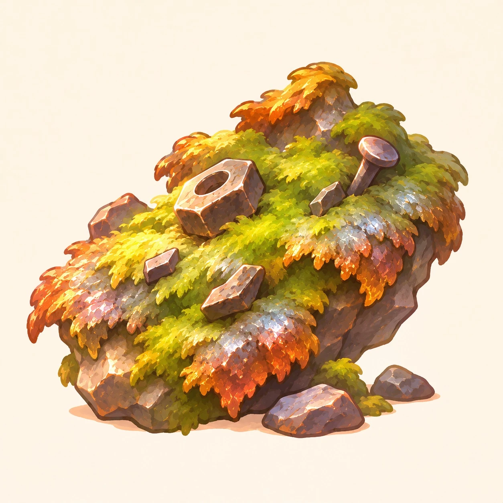
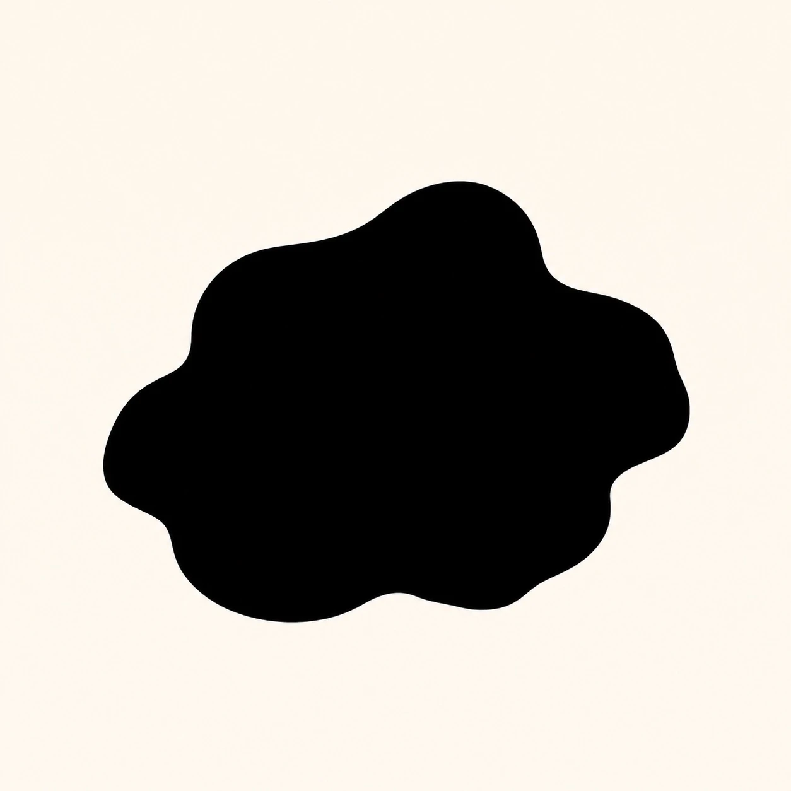
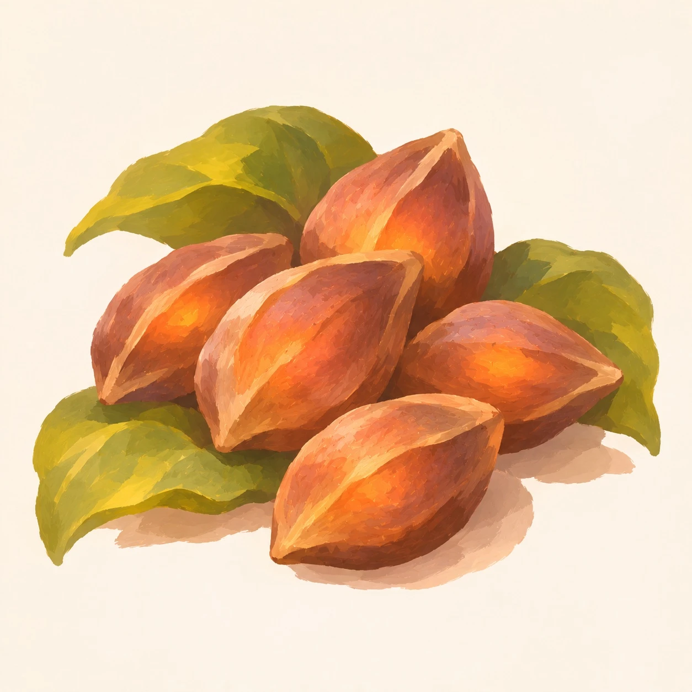
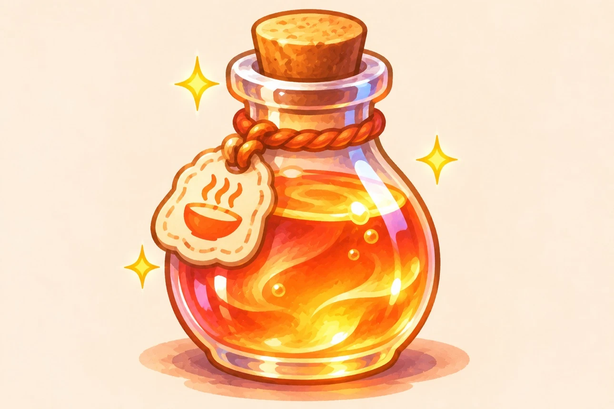

📖 0001-01-02 の記録（天気：晴れ）
- マルコ・コルクは「新素材の流通路を作り、市場を大きくする」に向けて活動した（商人／市場主）
- ポコは丘から街を観察し、記録小屋で本日の記録を書いた
⚗️ 錬金実験：ルナが「霧よけランプ油」の実験に成功

巨大なフラスコの中で営まれる、小さな錬金術の世界。毎日、少しずつ物語が進んでいます。
世界で今日起きたことを、記録者のポコが書き留めています。
フラスカリアで採れる素材たち。気になる素材は開いてみてください。

しずく草

コルク樹皮

くるり丸石

映し湖の朝露

もすもす苔

ガラス砂

霧結晶

プリン花の蜜

鉄苔

月光キノコ

星屑粉未発見

火種の種
素材を組み合わせて生まれる錬金品。レシピの中身も見られます。

ぽかぽか薬

霧よけランプ油
硬化樹脂
星屑触媒（仮説）
この世界に暮らす8人。それぞれの目標や、いま取り組んでいることがあります。
ポコ
ルナ・ヴェルデ
マルコ・コルク

シルヴァ・モス

セラ・ノート

ブラン・フォージ
ミア・ルーメ

トビ・クルル
創世からの記録です。失敗も成功も、消さずに残しています。
巨大な丸底フラスコの内部。外の世界からは小さな箱庭に見えるが、内側では完結した地形と空を持つ。
主な場所：ぽこ丘 → くるり川 → コルク森 → 映し湖 → ガラス壁と首の天窓 → ソコノマチ
中央のぽこ丘をくるり川が一周し、コルク森と映し湖が向き合い、フラスコの首が天窓になっています。